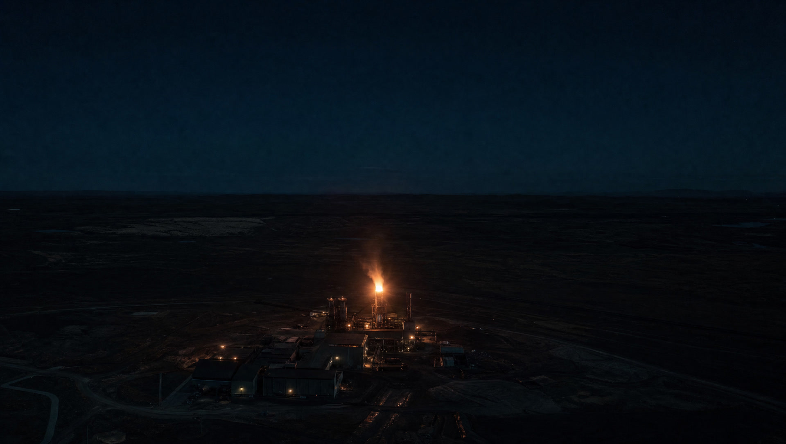
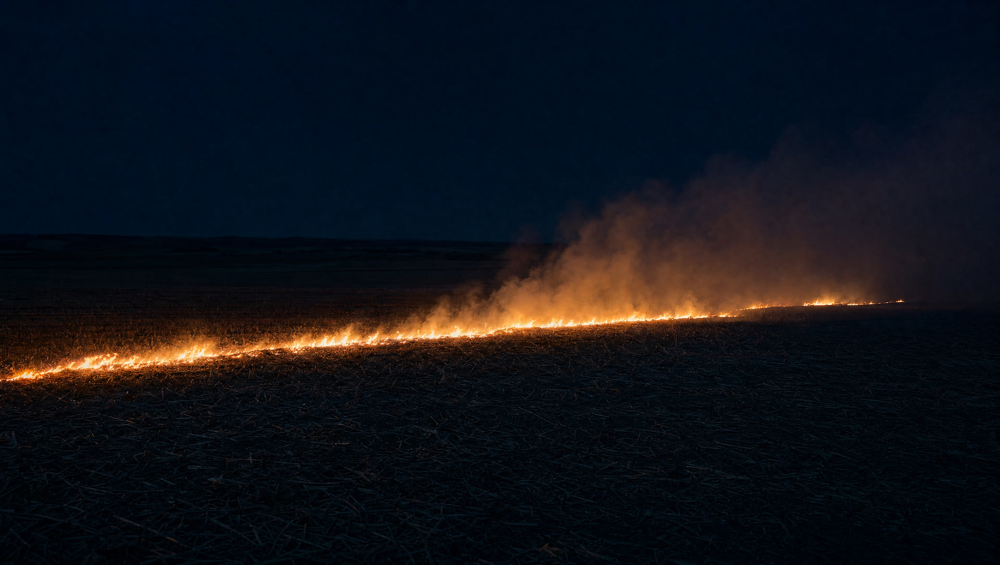

Heat, seen from orbit.
Every pass, thousands of thermal points over the world.
A satellite reports heat.
Not intent.
A paddy field and a factory losing containment light the same pixel.
Where is it.How often does it return.How sure are we.
Three questions turn heat into intent.
One point. One verdict.
Industrial Fire, Critical. Ranked for the officer who has to act before morning.
Heat, seen from orbit. Intent, decided on the ground.
FireWatch matches every satellite hotspot against mapped industrial sites and tests it for recurrence, so a furnace is never mistaken for a field, and a real fire is never lost in the noise.
Built on the feeds a department already cites.
A satellite reports heat. FireWatch reports intent.
Every thermal point from NASA FIRMS is measured against mapped industrial sites, tested for recurrence across separate passes, and ranked by what it would cost to ignore. What reaches the officer is a worklist, not a feed.

Every hotspot, screened and ranked.
Two fires, one pixel.
The radiometer cannot tell these apart. Switch the source and watch the sensor readings hold still while the verdict changes.

- Brightness temperature
- 331 K
- Fire radiative power
- 12.4 MW
- Pixel footprint
- 375 m
- Nearest mapped industrial site
- 14.0 km
- Separate days seen
- 1
- Land use underneath
- Cropland
Punjab, one season. Field teams visited 40,557 alert sites and found no fire at 17,832 of them. That is how a feed loses an officer.
Screen a hotspot yourself.
Move the three inputs. The verdict follows the same written thresholds the engine runs on the live feed.
- Proximitywithin 3 km of a mapped industrial site
- Persistenceseen on 3 or more separate days
- Confidencesensor confidence 85% or better
Route to the district industrial-safety authority for ground verification within 24 hours.
Five jobs, all of them named.
Each one runs on its own and hands the next one a CSV. Nothing in the chain is hidden from the officer who has to defend the call.
Every thermal point in the window is pulled, de-duplicated, and given a distance to the nearest mapped industrial site.
Proximity, persistence, and confidence decide industrial, agricultural, or natural. Three thresholds, written down.
Critical and High only, ordered by severity then confidence. The list a district officer works through.
Points that come back on 3 or more separate passes are held and counted, so a returning site cannot hide in one night's noise.
Crop residue months are labelled, not deleted. Agricultural volume stays visible as context and out of the queue.
The people who send the team.
A ranked morning list instead of a night of thermal points. Every row carries the satellite, the distance, the recurrence count, and the rule that fired.
Persistent heat at a registered unit, counted across passes, with the history an inspection notice needs behind it.
A view of your own perimeter, so a flare or a furnace running past its window is caught before somebody else reports it.